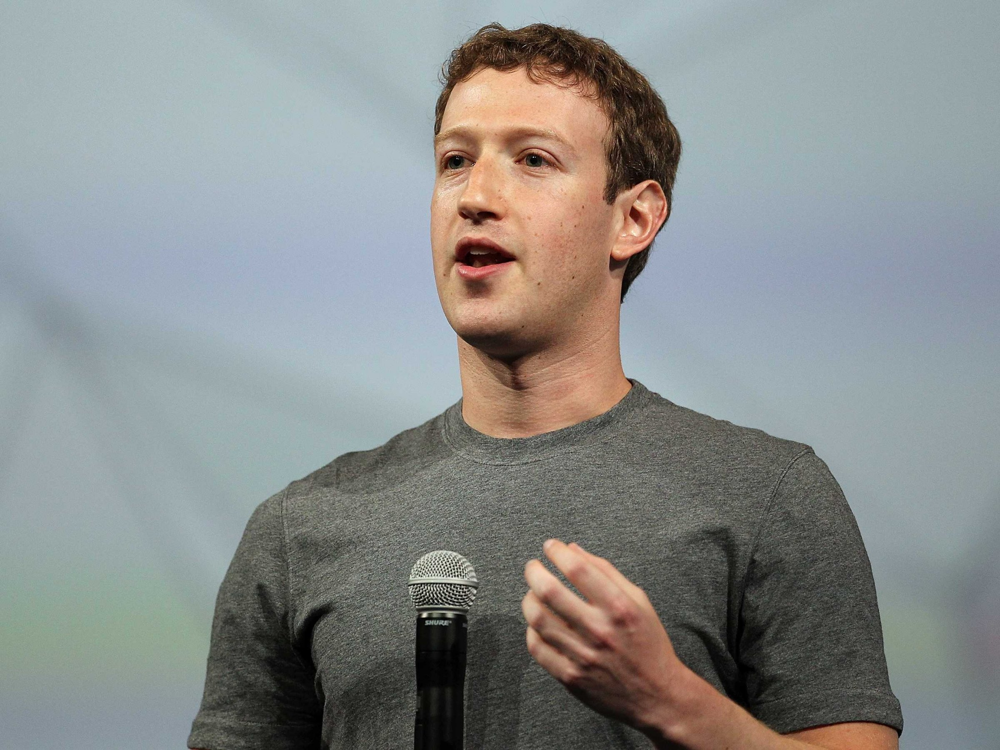

 Марк Цукерберг известный американский предприниматель и один из основателей крупнейшей социальной сети в мире Facebook. Он родился 14 мая 1984 года в городе Уайт Плейнс, штат Нью-Йорк. Его успех начался еще во время учебы в Гарвардском университете, когда он создал социальную сеть "The Facebook" для студентов университета. Со временем проект стал популярным и привлек инвестиции, а затем превратился в глобальную социальную сеть Facebook.
Марк Цукерберг - один из самых ярких и успешных предпринимателей в сфере технологий. Его история успеха началась еще в студенческие годы, когда он создал социальную сеть "The Facebook" для студентов Гарвардского университета. Стремление к созданию платформы, где люди могли бы общаться, делиться информацией и взаимодействовать, привело к созданию Facebook, который стал одним из самых популярных и крупнейших социальных сетей в мире. Основываясь на успехе Facebook, Марк Цукерберг добился множества выдающихся результатов. Его компания стала лидером на рынке социальных медиа, превратившись в многофункциональную платформу, объединяющую миллиарды пользователей по всему миру. Под руководством Цукерберга Facebook продолжает развиваться и внедрять инновационные технологии, что позволяет его платформам оставаться актуальными и конкурентоспособными. Марк Цукерберг также проявил себя как успешный инвестор и предприниматель, приобретая такие популярные платформы, как Instagram и WhatsAp, и интегрируя их в экосистему Facebook. Его стратегическое видение и решительные действия позволили расширить влияние компании и укрепить ее лидерство в индустрии социальных медиа. Кроме того, Марк Цукерберг активно занимается филантропической деятельностью через Chan Zuckerberg Initiative, направленную на решение глобальных проблем в области здравоохранения, образования и других общественных сфер. Его пример вдохновляет многих молодых предпринимателей и становится ярким образцом успеха в мире современных технологий.
Сайт разработал:© Морев Никита